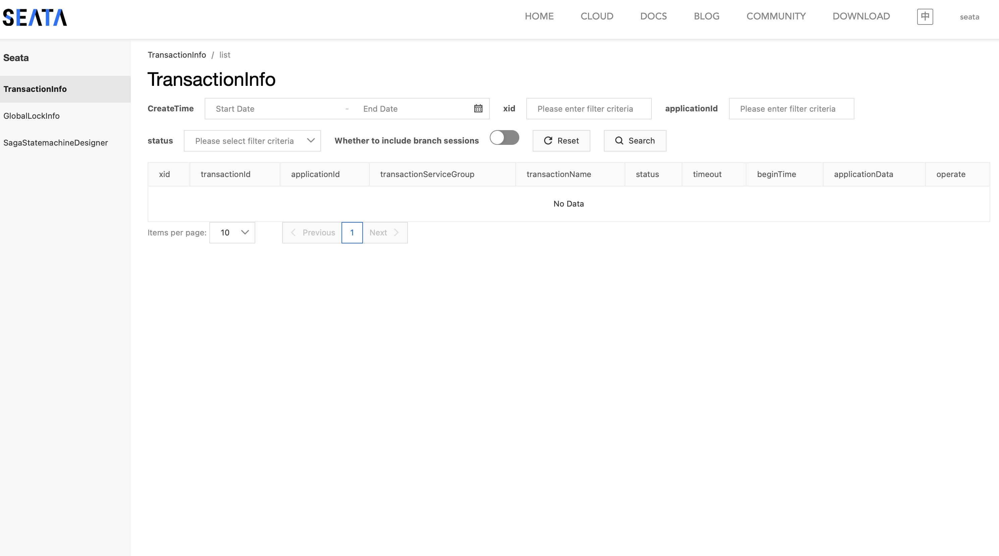

Spring Cloud 速成 Ch11 分布式事务 Seata
Seata 属于 Spring Cloud Alibaba 的组件，这里我们介绍它的原因是 Spring Cloud 官方并没有提供分布式事务的解决方案，而 Seata 是一个开源的分布式事务解决方案，它提供了 AT、TCC、SAGA、XA 四种分布式事务解决方案，其中 AT 模式是最常用的。我们只介绍 AT 模式。
事务
Spring 中，事务是指的是一组操作，要么全部成功，要么全部失败。在 Spring 中使用事务，我们可以使用 @Transactional 注解，它可以用在类上，也可以用在方法上，用在类上表示类中的所有方法都是事务性的，用在方法上表示该方法是事务性的。
@Service
public class UserService {
@Autowired
private UserDao userDao;
@Transactional
public void add() {
userDao.add();
int i = 1 / 0;
}
}
加上这个注解后，Spring 会在方法执行前开启一个事务，方法执行后，如果没有异常，会提交事务，如果有异常，会回滚事务。这里的回滚是通过 AOP 实现的，Spring 会在方法执行前后插入一些代码，这些代码就是事务的实现。
分布式事务
在分布式系统中，事务的问题会更加复杂，因为事务不再是在一个数据库中，而是在多个数据库中。在分布式系统中，我们需要保证事务的 ACID 特性，
- 原子性（Atomicity）：事务是一个不可分割的工作单位，要么全部成功，要么全部失败。但是在分布式系统中，事务可能会在多个数据库中，这就需要保证所有数据库的事务要么全部成功，要么全部失败。
- 一致性（Consistency）：事务执行前后，数据的完整性没有被破坏。但是在分布式系统中，数据可能会在多个数据库中，这就需要保证所有数据库的数据一致。
- 隔离性（Isolation）：事务之间是相互隔离的，一个事务的执行不会影响另一个事务的执行。但是在分布式系统中，事务可能会在多个数据库中，这就需要保证所有数据库的事务之间是隔离的。
- 持久性（Durability）：事务执行后，数据是持久化的。但是在分布式系统中，数据可能会在多个数据库中，这就需要保证所有数据库的数据是持久化的。
Seata 便是一个解决分布式事务的解决方案。
Seata 的基本原理
Seata 有三大核心概念：
- TC（Transaction Coordinator）：事务协调器，负责事务的协调和全局事务的管理。即 Seata 本身。
- TM（Transaction Manager）：事务管理器，负责事务的开启、提交、回滚。即事务的发起者，它负责定义全局事务的范围，即要操作哪些数据库。一般是第一个被调的，带事务注解的方法。
- RM （Resource Manager）：资源管理器，负责管理分支事务的注册、状态汇报、回滚。即数据库本身。
每个 Seata 事务的生命周期如下：
- TM 开启一个全局事务，生成一个 XID（全局事务 ID）。
- XID 传递给 RM，RM 生成一个 Branch ID（分支事务 ID）。
- RM 开启一个分支事务，执行业务逻辑。
- RM 将 Branch ID 和 XID 传递给数据库，数据库将 Branch ID 和 XID 保存到数据库中。
- TM 收到 RM 的返回，如果所有 RM 都返回成功，TM 提交事务，如果有一个 RM 返回失败，TM 回滚事务。
对于 AT 模式，具体而言，是通过锁和两次提交来实现的。
第一个阶段，业务数据和回滚日志在同一个本地事务中提交，在提交前后，会记录快照。第一阶段结束后，会生成行锁。第一个阶段是一个完整的本地事务。
第二个阶段，如果没有异常，只要删除第一阶段的锁、日志、快照即可。如果有异常，会通过第一阶段的日志和快照进行回滚。
Seata 的配置
为了方便部署，这里依然使用 Docker。但注意，一般而言数据库不会放在 Docker 里。其它部署方式见文档。
启动服务
首先，启动一个 Seata 服务：
seata-server:
image: seataio/seata-server:2.0.0
ports:
- "7091:7091"
- "8091:8091"
depends_on:
- postgres
- consul
volumes:
- ./seata/application.yml:/seata-server/resources/application.yml
修改配置
./seata/application.yml的具体内容要根据你的配置而定，模版可以在容器内的/seata-server/resources/application.example.yml找到，或者在GitHub。
如果用 consul 和 postgres，配置如下：
seata:
config:
# support: nacos 、 consul 、 apollo 、 zk 、 etcd3
type: consul
consul:
server-addr: consul:8500
acl-token:
key: seata.properties
registry:
# support: nacos 、 eureka 、 redis 、 zk 、 consul 、 etcd3 、 sofa
type: consul
consul:
cluster: seata-server
server-addr: consul:8500
acl-token:
其它的配置都是通过 Consul 完成的。
注意，这里 register 的 cluster 是 Consul 的服务名，之后我们要要在客户端的配置文件中使用这个服务名。
Server 服务注册与配置
如果使用服务中心方式，需要在服务中心进行配置。下文以 Consul 为例。
要把 Consul 作为 seata 注册地，启动 seata 前，将这个配置文件提交给 consul，否则会报错。
这里可以使用官方提供的脚本，进入容器内使用。注意，config.txt 文件要放在这个脚本的上级目录。这一步是将 Consul 作为注册中心需要的。
注意，因为我们用了 postgres，要修改这一部分配置。
store.db.datasource=druid
store.db.dbType=postgresql
store.db.driverClassName=org.postgresql.Driver
store.db.url=jdbc:postgresql://postgres:5432/seata
store.db.user=user
store.db.password=password
这些参数的含义参考这个文档。
而将 Consul 作为配置中心，还要创建一个seata.properties文件，目前留空即可，因为前面的配置文件已经包含了所有配置。
Client 事务分组与配置
我们讲解在配置文件中唯一重要的概念，事务分组。事务分组是指将一个 Seata 集群中不同服务器分成若干组，然后一些微服务会使用某个分组。
首先，我们需要在两个服务中引入 Seata Client 的依赖。
implementation 'io.seata:seata-spring-boot-starter:2.0.0'
implementation 'io.seata:seata-all:2.0.0'
使用 Spring Boot 时，默认的配置文件如下，
seata:
registry:
type: consul
consul:
server-addr: 127.0.0.1:8500
# 事务分组配置，1.4.2 默认名称为 my_test_tx_group ，1.5版本将改为 default_tx_group
tx-service-group: my_test_tx_group
service:
# 事务分组与集群映射关系
vgroup-mapping:
my_test_tx_group: default
全部的配置可以见这个文件。
具体而言，对于一个微服务，它在寻找自己对应的 Seata 服务器时，会经过如下步骤（假设使用 boot 版本）：
- Client 会先在配置文件的
seata.tx-service-group中找到事务分组的名字。这个值默认是 my_test_tx_group。 - Client 会在
seata.service.vgroupMapping.${seata.tx-service-group}中找到这个分组对应的服务名。这个值记为分组名group-name。如果使用远程配置，这个值的 key 省略为service.vgroup-mapping.${seata.tx-service-group}。 - Client 在
service.grouplist.${group-name}找到这个分组的服务器地址。使用远程配置时，会用${group-name}作为服务名去找。
如果全用本地配置，应当这样（type 字段默认都是 file）：
seata:
registry:
consul:
server-addr: localhost:8500
tx-service-group: tx_group
service:
vgroup-mapping:
tx_group: seata-group
grouplist:
seata-group: 127.0.0.1:8091
对于我们使用 consul，应该这样配置：
seata:
config:
type: consul
consul:
server-addr: localhost:8500
registry:
type: consul
consul:
server-addr: localhost:8500
tx-service-group: tx_group
而 service 部分应当远程配置，即在 Consul 的 KV 中，我们之前的 config 只添加了默认的配置，现在要添加这些字段：
service.vgroup-mapping.tx_group=seata-server
这里 seata-server 是我们的服务名，即之前配置的cluster。
但是，注意，目前因为我们使用了 docker 配置，所以我这里获取的 seata 地址是172.18.0.5:8091，这是容器内的地址。在生产环境中，如果产品也是运行在 docker 环境中，只要设置 exposed 就可以了。但是现在我们的产品是运行在本地的，而 seata 运行在 docker 内，要么让 docker 网络和本地网络相连，要么把一整套迁移到本地。
因此为了避免麻烦，下面的演示使用 file 模式配置。
数据库配置
然后，Seata 需要一个单独的数据库，用于保存事务信息。这个文件可以从 Seata 官方下载，然后自行建立一个新的名为seata的数据库，导入这个文件。
创建之后，应该有这样的表：

之后，重新启动 Seata 服务，会有一些错误，但是最后会成功启动。Seata 需要一点时间从 Consul 读取信息。最后，命令行上会输出 web 界面的地址，访问这个地址，可以看到 Seata 的控制台。Consul 中也会有 Seata 服务的注册。
输入 application.yml 里的账号和密码后，可以看到这个界面：

Seata 的使用
为了测试，我们人为构造一个没有意义的事务。现在创建两个数据表，每个数据表都有一个 id，第一个数据表有一个 name，第二个数据表有一个 age。我们要保证这两个表的数据要么同时插入，要么同时删除。
CREATE TABLE name (
id SERIAL PRIMARY KEY,
name TEXT
);
CREATE TABLE age (
id SERIAL PRIMARY KEY,
age INT
);
然后创建对应的 Repository 和 Record。因为我们要测试的场景是分布式事务，即若干微服务都操作数据库。
我们在之前的，作为 provider 的 payment 服务中，提供一个新的 API，这个 API 应当向 name 表插入数据。
package io.github.fingerbone.entity;
import jakarta.persistence.Column;
import jakarta.persistence.Entity;
import jakarta.persistence.GeneratedValue;
import jakarta.persistence.GenerationType;
import lombok.AllArgsConstructor;
import lombok.Data;
@Entity
@Data
@AllArgsConstructor
public class Name {
@Column
@Id
@GeneratedValue(strategy = GenerationType.IDENTITY)
private Long id;
@Column
private String name;
}
package io.github.fingerbone.repository;
import org.springframework.data.jpa.repository.JpaRepository;
import org.springframework.stereotype.Repository;
import io.github.fingerbone.entity.Name;
@Repository
public interface NameRepository extends JpaRepository<Name, Long> {
}
package io.github.fingerbone.service;
import org.springframework.beans.factory.annotation.Autowired;
import org.springframework.stereotype.Service;
import io.github.fingerbone.entity.Name;
import io.github.fingerbone.repository.NameRepository;
import lombok.RequiredArgsConstructor;
@Service
@RequiredArgsConstructor
public class NameService {
private final NameRepository nameRepository;
public void createName(String name) {
System.out.println("Will create name with name: " + name);
nameRepository.save(
new Name(null, name)
);
}
}
package io.github.fingerbone.controller;
import io.github.fingerbone.entity.Payment;
import io.github.fingerbone.record.PaymentRecord;
import io.github.fingerbone.service.NameService;
import io.github.fingerbone.service.PaymentService;
import io.github.fingerbone.wrapper.ResponseWrapper;
import lombok.RequiredArgsConstructor;
import org.springframework.beans.factory.annotation.Autowired;
import org.springframework.web.bind.annotation.GetMapping;
import org.springframework.web.bind.annotation.PostMapping;
import org.springframework.web.bind.annotation.RequestMapping;
import org.springframework.web.bind.annotation.RestController;
import org.springframework.web.bind.annotation.RequestBody;
import org.springframework.web.bind.annotation.PathVariable;
import org.springframework.web.bind.annotation.DeleteMapping;
import org.springframework.web.bind.annotation.PutMapping;
import java.util.stream.Collectors;
import java.util.List;
@RestController
@RequestMapping("/payment")
@RequiredArgsConstructor
public class PaymentController {
private final NameService nameService;
@PostMapping("/name")
public void createName(@RequestParam String name) {
nameService.createName(name);
}
}
然后是 order 服务，这个服务应当向 age 表插入数据，然后请求 payment 服务插入 name 表数据。
@HttpExchange("http://payment-service/payment")
public interface PaymentAPIIf {
@PostExchange("/name")
void createName(@RequestParam String name);
}
package io.github.fingerbone;
import jakarta.persistence.Column;
import jakarta.persistence.Entity;
import jakarta.persistence.GeneratedValue;
import jakarta.persistence.GenerationType;
import lombok.AllArgsConstructor;
import lombok.Data;
@Entity
@Data
@AllArgsConstructor
public class Age {
@Id
@Column
@GeneratedValue(strategy = GenerationType.IDENTITY)
private Long id;
@Column
private Short age;
}
package io.github.fingerbone;
import org.springframework.data.jpa.repository.JpaRepository;
import org.springframework.stereotype.Repository;
@Repository
public interface AgeRepository extends JpaRepository<Age, Long> {
}
package io.github.fingerbone;
import org.springframework.stereotype.Service;
import lombok.RequiredArgsConstructor;
@Service
@RequiredArgsConstructor
public class AgeService {
private final AgeRepository ageRepository;
private final PaymentAPIIf paymentAPIIf;
public void create(String name, Short age) {
System.out.println("Will create age with name: " + name + " and age: " + age);
ageRepository.save(
new Age(null, age)
);
System.out.println("Will create name with name: " + name);
paymentAPIIf.createName(name);
}
}
package io.github.fingerbone;
import io.github.fingerbone.api.PaymentApi;
import io.github.fingerbone.record.PaymentRecord;
import io.github.fingerbone.wrapper.ResponseCode;
import io.github.fingerbone.wrapper.ResponseWrapper;
import io.github.resilience4j.bulkhead.annotation.Bulkhead;
import io.github.resilience4j.circuitbreaker.annotation.CircuitBreaker;
import lombok.Data;
import lombok.RequiredArgsConstructor;
import org.springframework.beans.factory.annotation.Autowired;
import org.springframework.http.HttpEntity;
import org.springframework.http.ResponseEntity;
import org.springframework.web.bind.annotation.*;
import org.springframework.web.client.RestTemplate;
import org.springframework.core.ParameterizedTypeReference;
import org.springframework.http.HttpMethod;
import java.util.List;
import org.springframework.web.bind.annotation.PostMapping;
import org.springframework.web.bind.annotation.RequestBody;
@RestController
@RequestMapping("/if/payment")
@RequiredArgsConstructor
public class ConsumerPaymentController {
private final AgeService ageService;
@PostMapping("/age")
public void createAge(@RequestParam String name, @RequestParam Short age) {
ageService.create(name, age);
}
}
现在，启动两个服务，进行测试，可以发现 name 表与 age 表可以被正确操作了。
现在，我们希望插入 name 和 age 作为同一个事务，即要么同时插入，要么同时删除。两个微服务的两个 Service 作为同一个事务进行处理。
参考 Seata 的文档，在 AT 模式下，需要在需要事务操作的数据库中创建一个undo_log表。脚本在这里。
要使用 Seata，只需要为 TM 方法加上@GlobalTransactional注解即可，即整个微服务调用链的发起方法。
@GlobalTransactional(name = "createUser", timeoutMills = 10000, rollbackFor = Exception.class)
现在，如果在被调微服务中手动触发异常，可以发现，尽管命令行中输出了插入的相关信息，但数据库里并没有信息，说明触发了 Rollback，命令行上也有相关的输出。
在 Seata 的控制台上，也有相关记录。